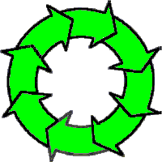

Lessons in Theosophy
(A Besant/Leadbeater Perspective)

— Nick Mojzesz
1.
What is Theosophy?
The Three Objects of the Society
Not A Religion
Freedom Of Thought
Altruism And Service
Brotherhood
2.
History of the Theosophical Society
Helena Petrovna Blavatsky
Colonel Henry Steel Olcott
Their First Meeting
Schism and Division
Neo-Theosophy
The Theosophical Society today
3.
Reincarnation and Karma
Reincarnation
Not Coming Back As Animals
Unexplained Abilities
Unexplained Affinities and Interests
Unexplained Memories
“Soul-Mates”
“Evolution”
Reincarnation and Brotherhood
Karma
The Reincarnation Online Forum
4.
Do
Theosophists believe in God?
Definition of God
Names and Characterists of the Absolute
The Absolute as described in The Secret Doctrine
God vs. the Absolute
God in the Bible, and the Creation Story in Genesis
The Seven Dhyani-Chohan
One Personal God vs. A Hierarchy (Archangels, etc.)
The Theosophical Concept of Logos
Final Thoughts
5.
Nirvana
Descriptions of Nirvana
Nirvana's Effect on Our Perception of Life
in the Physical World
Nirvana as the Removal of Separateness
A circle with its center everywhere
and its circumference nowhere
Nirvana is not Annihiliation
Forsaking Nirvana to do Service
here in the Physical World
6.
Heaven, Hell, Purgatory, Avichi, and Devachan
A Geography of the Invisible Worlds
Hell
Suicide
Purgatory
Heaven
“Astral Heaven”
Heaven Above vs. Hell Below
Length of Time in the After-Life
Moving Through the Different Levels
Devachan
Upper Mental or “Higher Heaven”
Heaven vs. Nirvana
Avichi
7.
Planes of Existence (Physical, Astral, etc.)
The Adi Plane
The Anupadaka Plane
The Atma (Nirvana) Plane
The Buddhi Plane
The Mental Plane
The Astral Plane
The Physical Plane
In Conclusion: The Seven Planes
8.
Death And The Reincarnation Cycle
9.
Evolution (Theosophy-Style); The Upward Arc
Minerals
Plants
Animals
Humans
Beyond Human
10.
Individualization
11.
Monad, Atman, Ego, Causal Body
Monad
Atman
Buddhi
Manas
Atma-Buddhi-Manas
Ego
Emanations from the Ego
Causal Body
Mental Body
Astral Body
The Personality
Physical Body
In Summary
12.
The Ancient Wisdom vs. Today's Major Religions
Esoteric vs. Exoteric Teachings
Original Teachings vs. Changed Teachings
Why Are There Esoteric Teachings?
Theosophy — An Ancient Tradition
The Re-Vitalizing of Deteriorating Religions
A Periodic Re-Teaching of the Divine
13.
Buddhism, Christianity, Hinduism and Others
Christianity
The Trinity
Being One with the Father
Sin
Being Saved
Buddhism
Hinduism
Ancient Egypt
Masonry
Confusianism
Sikhism
The Way of Tao
Similarity of all the Major Religions
14.
Theosophical Pantheon (Buddhas, Bodhisattvas, etc.)
First Initiation, “He who has Entered the Stream”
Second Initiation, “He who Receives Birth Once More”
Third Initiation, “He who Receives Birth No More”
Fourth Initiation, Arhat
Fifth Initiation, Adept
Sixth Initiation, Chohan
Seventh Initiation, Manu, Bodhisattva, or Maha-Chohan
Eighth Initiation, Buddha, or Pratyeka Buddha
Ninth Initiation, The Lord of the World
Tenth Initiation, The Silent Watcher
Further Above
15.
Root-races and the History of the World
Seven Races (“Root-Races”)
Sub-Races
16.
History of the Solar System
311 trillion years
Chains, Rounds, World Schemes
Manvantaras, Kalpas, Days of Brahman
17.
The Flow of Consciousness — The Entire Involution-Evolution
Cycle
The Unmanifest
The Adi Plane
The Anupadaka Plane
The Atma (Nirvana) Plane
The Buddhi Plane
The Mental Plane — The First Elemental Appears
The Astral Plane
The Physical Plane
Minerals
Plants
Animals
Humans
18.
The Beginning of the Universe
The Absolute
The Universe
A Universal Manvantara
The Previous Universal Pralaya Ends
Our Present Universal Manvantara Begins
The Biblical Story of Creation
Veil Upon Veil
The Theosophical Concept of Logos
The Logos is One? The Logos is Three?
Universal Logos vs. Solar Logos
19.
The Secret Doctrine
H. P. Blavatsky’s The Secret Doctrine
Stanzas of Dzyan
20.
The Masters
The Masters
Not Gods; More Like “Elder Brothers”
Their Number is Small, Their Help is Immeasureable
They Guide The Evolution of Our World
“Perfected Humans”
The Two Masters, Morya and Kuthumi
Finding Our Own Personal Master
Why Have I Not Been Approached by a Master?
The Mahatma Letters
Leadbeater's Book: The Masters and the Path
21.
The Path
The Path
Esoteric Teachings and Initiates
Preparation for the Path
- Love
- Greed and Selfishness
Qualifications for Discipleship
Finding the Teacher
Requirements for the First Initiation
“The Whole World is Against Me.”
Entering the Path Proper, the First Initiation
The Second Initiation, “The Man Who Builds a Hut”
The Third Initiation, Birth No More
The Fourth Initiation, Arhat
The Fifth Initiation, Adept
The Purpose of Physical Life is Achieved
What Next?
Both Knowledge AND devotion are required
Final Thoughts
22.
Suggested Readings
General Organization of This Page
The Classics in Theosophical Literature
Textbooks vs. Devotional Books
Textbooks
Devotional Books
Textbooks (Continued)
Links in Subject Areas
Other General Textbooks on Theosophy
Glossaries, etc.
Keyword Search Functions
Online Theosophical Periodicals
For Children
Norse Mythology
Meditation
Criticism of Neo-Theosophy
Future Additions to the Recommended Book List
Got Additions to Suggest?
23.
Theosophy Online
Theosophical Organizations
Large List of Chapters in Different Cities and Countries
Names of Chapters Not Listed Above
A Theosophical Monastic Order
Websites to Books & Articles Online
Websites that Sell Theosophical Books
Websites with Lists of Theosophical Literature
Foreign Language
Specific Books and Periodicals
Bookstores that Stock Theosophical Books
Theosophical Libraries
Got Additions to Suggest?
24.
What next?
Read books.
Join a study-group.
Start a study-group.
Conferences, Libraries, Study-centers, National Offices
Final Words
Post Script
|
|